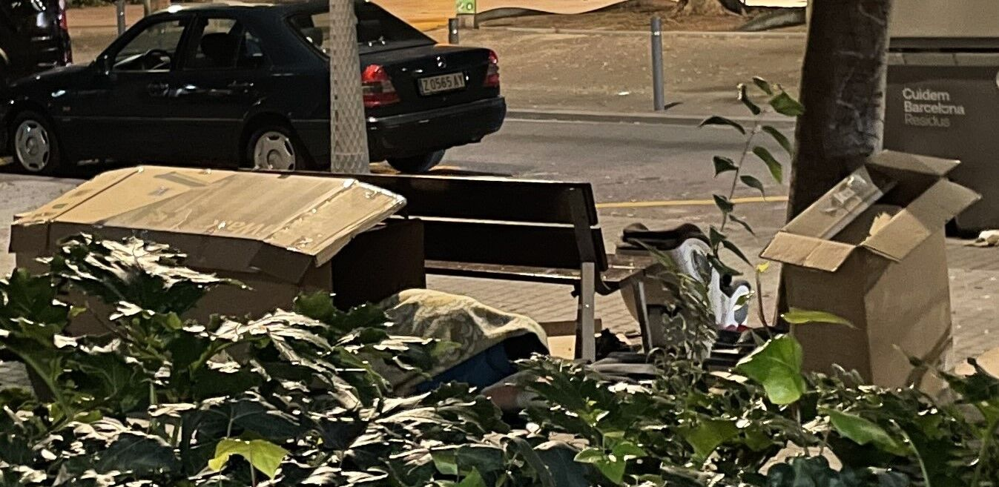
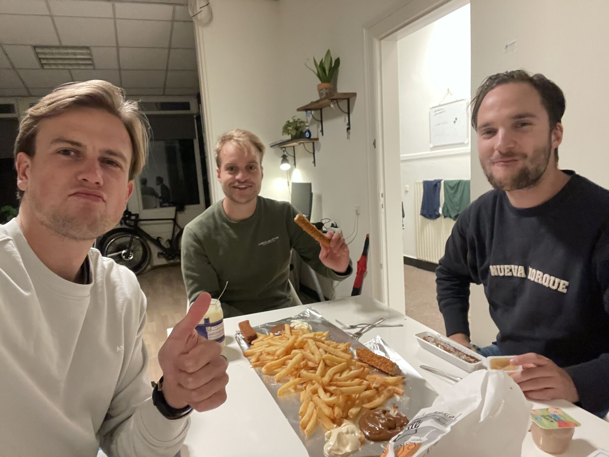
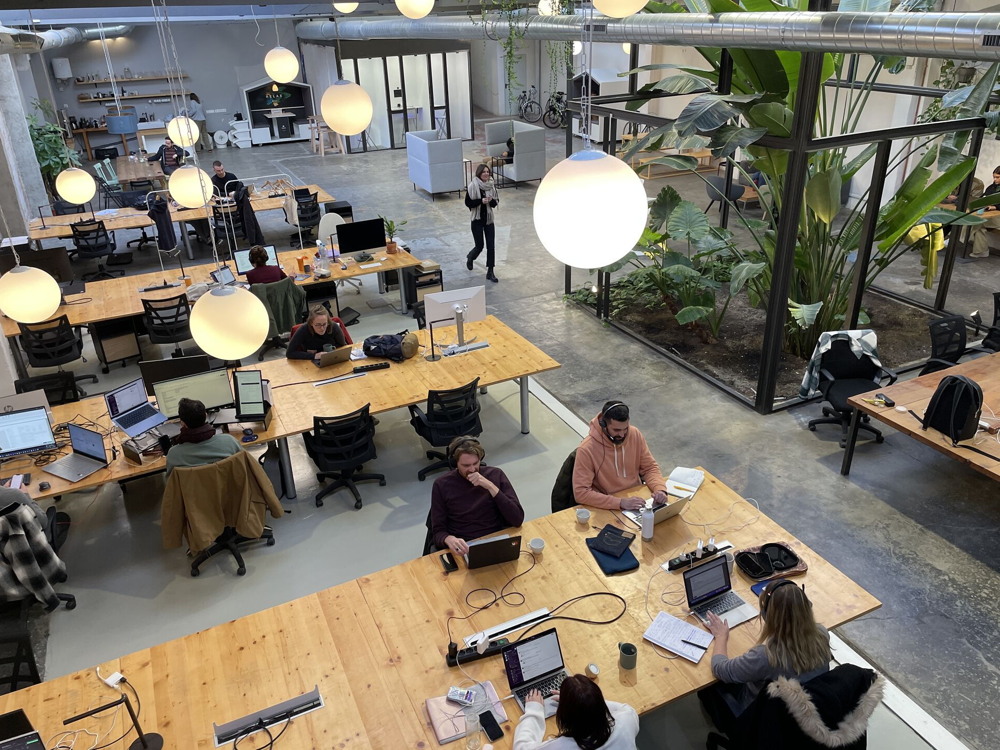
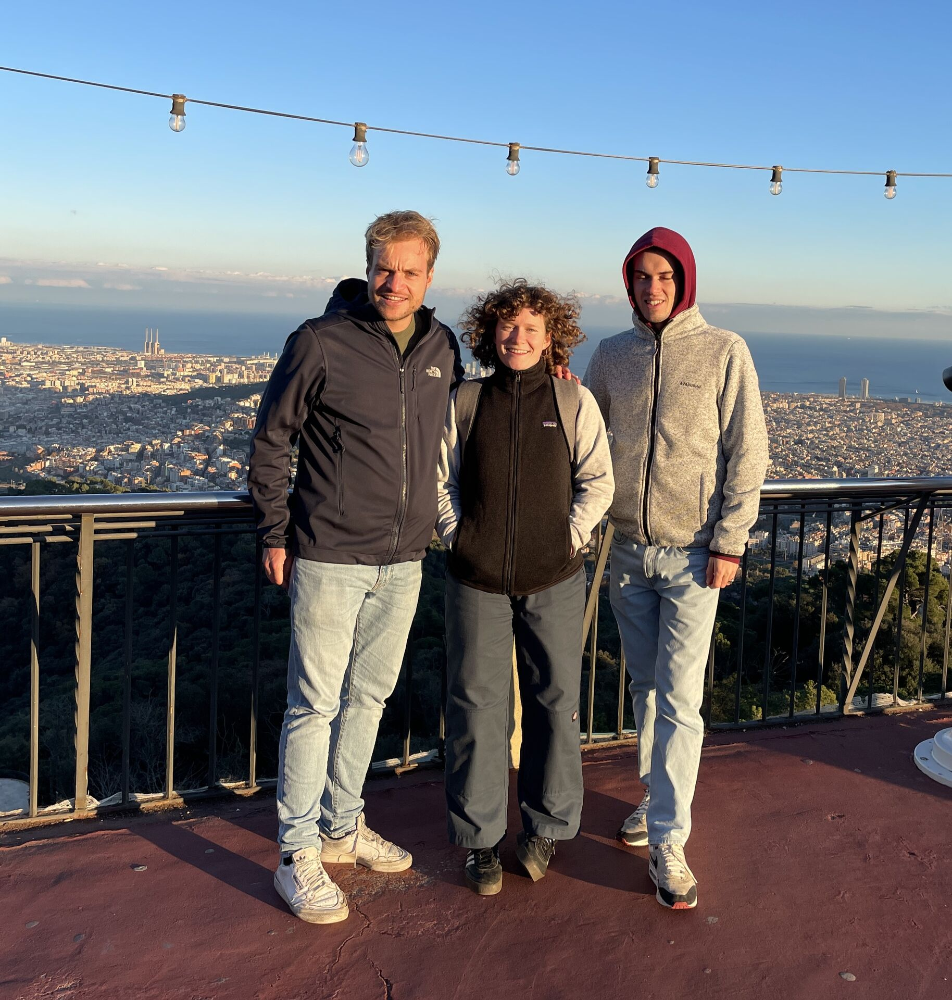
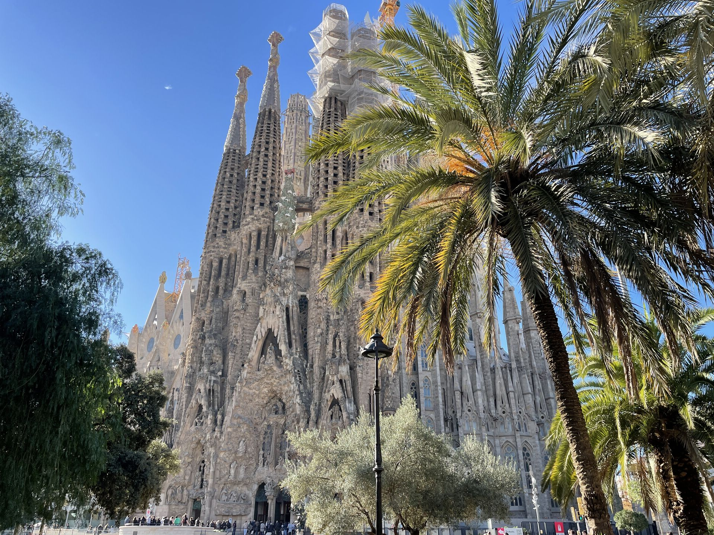
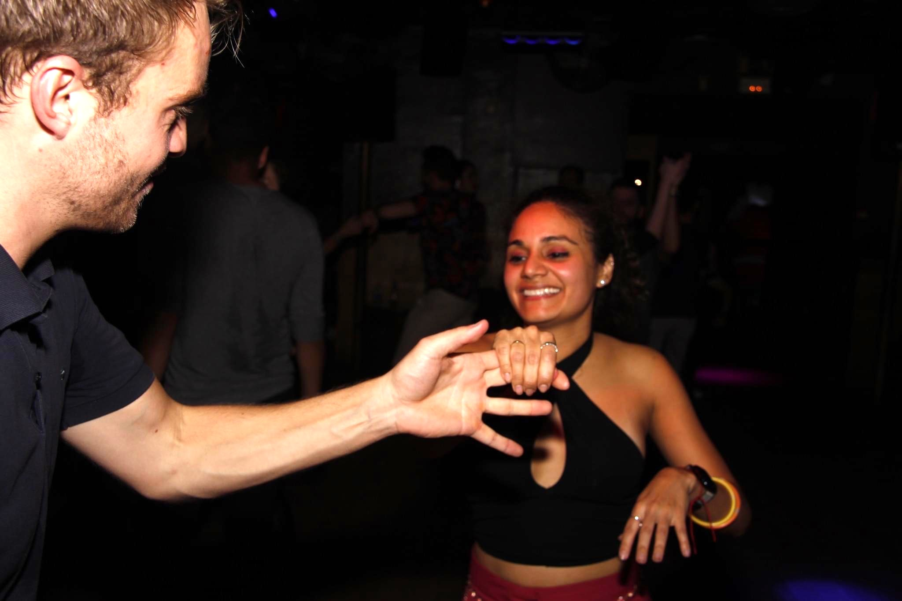
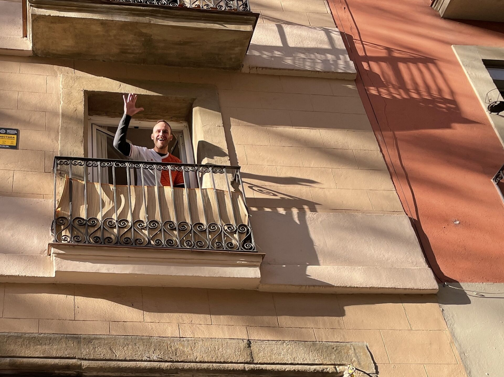

06 Thuis in
Barcelona
Zwervers voor de deur,
co-werkplek geeft rust,
en de huisgenoten voorgesteld.
De winter heeft haar intrede gedaan. Het wemelt hier van de zwervers en sinds deze week slaapt er één pal voor mijn deur in een grote kartonnen doos. Ik vraag mij echt af hoe deze mensen de winter gaan overleven want in ons niet geïsoleerde appartement is het na zondondergang flink bibberen. In ons appartementencomplex woont ook een vrouwtje met een hond die alles nauwlettend in de gaten houdt. Tijdens mijn eerste dagen wonend aan Carrer de Llanca blokkeerde deze pittige tante mij de voordeur en vroeg in vliegensvlug Spaans waarom ik naar binnen wilde. Ik zei natuurlijk dat ik er pas net woonde, waarop ze zei, nou laat dan maar eens even je sleutel zien. Even aftasten dus, wat voor vlees je in de kuip hebt. Soms moet je mensen ook even wat beter leren kennen, want inmiddels maken we geregeld een vriendelijk praatje en lijkt ze me te beschouwen als een van hen. Ze vertelde me dat ze de politie had gebeld om die arme zwerver, weg te sturen, maar gezien het aantal zwervers lijkt daar hier geen beginnen aan is.
Barcelona voelt steeds meer als thuis, en dat is zo fijn. Na een paar maanden merkte ik dat het nog niet altijd even goed ging. Sommige nachten sliep ik slecht of zat ik nog tot laat op mijn telefoon. Ik begreep ook niet goed waar het vandaan kwam, want ik had met de rugby, salsa, hiken en het vrijwilligerswerk in bar RAI toch voldoende afwisseling in de week. Maar stel ik had een avondje voor mij alleen, waar ik normaal gesproken ook erg van kan genieten, dan was dat de avond waar ik juist erg tegenop ging zien. Je zou mij een week op een onbewoond eiland kunnen zetten met wat boeken en waarschijnlijk zal ik me er prima vermaken. Alleen misschien is het goed alleen kunnen zijn juist nu ook een valkuil, want na 3 maanden werken op mijn laptop in de universiteitsbibliotheek zonder praatje met iemand in de echte wereld, merkte ik dat het mij toch wel begon op te breken. In die bibliotheek zag ik dan studenten lekker met elkaar lachen en zelf ken je er eigenlijk helemaal niemand.
Met de ‘neefjes’ een vriendengroep uit Bavel vertrokken we eind november voor een weekend naar Praag. Even uit de dagelijkse omgeving zijn geeft mij altijd veel nieuwe energie. Met vriend Ivo sprak ik over de co-werkplek waar ik over twijfelde of ik dat niet toch moest gaan doen. Een co-werkplek is een ruimte waar verschillende mensen vaak digitaal aan hun eigen projecten werken. Nadat ik moe maar voldaan terugkwam van het weekendje Praag, ging ik langs bij co-werkplek Cahoot in wijk Sant-Antoni op 10 minuten fietsen van ons appartement. Het bedrijf wordt gerund door de Noorse eigenaar Rudy die een grote oude garage heeft omgetoverd tot een modern kantoor met grote houten bureaus en comfortabele bureaustoelen te midden van allerlei tropische planten. Een top locatie om even te ontsnappen aan de drukte van de stad. Je kan er je mobiel draadloos opladen, werken in focus zitjes en gratis koffie en thee pakken. Het is een behoorlijke kostenpost, wat het rondkomen hier niet makkelijker maakt, maar jezelf op je gemak voelen is ook wat waard. Tijdens de rondleiding viel me op dat ik voor het eerst sinds lange tijd weer eens ergens de jongste was, haha. Er werken allerlei mensen: Startups, programmeurs, webdesigners, grafisch ontwerpers, digitale docenten, video editors, filmmakers en zelfs een kerel die de hele dag door bezig is met pokeren. Met zo veel verschillende beroepen, die uitgeoefend worden door mensen uit verschillende landen, lijkt het soms wel of je op reis bent. Het gemak waarmee mensen komen en gaan, waarbij ze soms zelfs met hun reiskoffer aankomen om te werken en vervolgens naar de volgende bestemming door te reizen. Welkom in het leven van de digital nomads!
Sinds ik vanuit deze co-working ben gaan werken voelt alles zo veel beter. Mijn fiets parkeer ik naast mijn bureau wat ook prettig is omdat je niet steeds twee sloten om je fiets hoeft te doen. Ga je pauze houden dan kan je je laptop met een gerust hart achter laten. De eerste dag sprak ik een Duitser. Een eenvoudig gesprek over hoe hij hier was beland ontroerde mij omdat ik zo’n gezellig gesprekje tussen het werk door zo had gemist. Al is het maar 5 minuutjes, het geeft energie om vervolgens het werk weer op te pakken. De fijne sfeer op het werk neem je ook mee naar huis, waar de laatste tijd wat meer ruimte voor een praatje of bijvoorbeeld om indien nodig de was van een huisgenoot op te vouwen. We hebben het onwijs gezellig met elkaar, waarbij het natuurlijk ook helpt dat we sinds september hier alle vier zijn komen te wonen.
De eerste huisgenoot is Tommaso, 23 jarige Italiaanse jongen die gestudeerd heeft in Maastricht en hier in de sales werkt voor software bedrijf Cratech. De tweede huisgenoot is Pouya, een 24 jarige meid van Frans/Srilankeese afkomst, die ook werkt in de sales maar voor software bedrijf Amenitz en die via de telefoon nauwe banden onderhoud met haar familie. De laatste huisgenoot is Jessica, een meid van 24 afkomstig uit Indonesië die momenteel aan haar master sustainable business bezig is en in haar vrije tijd hoog in de hoepels hangt voor sport ‘areal’. Een internationaal huis kan je dus wel zeggen. Stuk voor stuk hele leuke mensen om mee te wonen. De klik met Tommaso is vooral erg goed omdat we samen erg goed kunnen lachen, elkaar goed kunnen begrijpen en ook bij elkaar kunnen binnenlopen zodra er iets is. Tommaso is ook een aantal keer mee geweest op stap met de vrienden die ik hier heb gemaakt. Zo was hij laatst tijdens het wereldkampioenschap in Qatar mee geweest naar de WK wedstrijd Nederland-Equador. We hebben de wedstrijd gekeken in een Irish pub die tot de nok toe gevuld was met Equadorianen en Nederlanders. Gisteren ontving Tommaso trouwens van zijn werk zijn kerstcadeau, een enorme kalfspoot met kilo’s vlees ter waarde van 200 euro, wat op zijn werk zelfs aan vegetarische werknemers werd meegegeven. Dit zou in Nederland in deze tijd toch haast ondenkbaar zijn, maar die stukken vlees zie je hier in Barcelona overal. Met de kerst in aantocht ontvingen we van Tommaso’s oma per post een mooie krans met kaarsen die we in de weken naar aanloop van kerst lieten branden.
Ik heb mezelf in een nogal lastig financieel pakket gewurmd, omdat ik zo graag wilde vertrekken naar Spanje met een beperkt inkomen en spaargeld. Als programmeur kan je goed verdienen, maar nog in opleiding is het vergelijkbaar met een stagevergoeding. Hierdoor zit er niets anders op dan het maar gewoon te gaan doen en in ieder geval de komende periode iedere euro twee keer om te draaien. Gelukkig voel ik mij totaal niet zielig, en zie het als een periode waarin ik creatief zal moeten zijn om leuke dingen te kunnen doen binnen het budget. Ik heb als vrijwilliger in de Spaanse lokale bar RAI nu al een aantal memorabele avonden gehad waarbij ik Spaans kon oefenen en gratis biertjes kon drinken. Daarnaast is er veel tijd om lekker te sporten, te hiken en boeken te lezen. En soms is het zuinig leven ook even klote omdat je vrienden maakt en wat kan je hier ook ontzettend goed? Bijvoorbeeld lekker uitgebreid uit eten of tot laat doorzakken in de kroeg. Voorlopig zit dat er helaas even niet in, met in het achterhoofd dat wanneer ik straks het programmeren wat beter onder de knie heb, dat er weer wat meer mogelijk is. Het kost veel geduld, tijd en energie, maar ik zal nog even moeten volhouden want ook al weet ik nu nog niet hoe lang het gaat duren, programmeurs zijn zo gewild dat je weet dat er licht is aan het eind van de tunnel. Ik grap soms in mezelf dat ik door deze carrière switch nog de kans heb om ooit misschien wel de nieuwe Bill Gates te worden, aangezien kunstmatige intelligentie een van de snelst groeiende markten is waar een hoop geld in omgaat.
Dansen was voor mij een wereld waar ik het liefst zo ver mogelijk vandaan wilde blijven en inmiddels ben ik bijna iedere week wel op een feestje te vinden. De eerste cursus salsa basico zit erop, waar ik een hoop mensen heb ontmoet. Afgelopen vrijdag was ik nog met vijf Spaans sprekende in een salsaclub bij mij om de hoek. Dat zijn natuurlijk mooie kansen om mijn handen en voeten Spaans wat op te krikken. Bij thuiskomst was het plotseling al half 7! Isabella en Wendy die ik nog ken van Salsaschool L’afrique in Wageningen hebben net als ik besloten om naar Barcelona te verhuizen en wonen nu bij mij in de buurt. Supergaaf om ook met hun salsa feestjes te bezoeken en om in die nieuwe omgeving mensen te hebben die je goed begrijpen als je het hebt over Nederland.
Tot slot de rugbyclub, waar ik nu wekelijks te vinden ben. Af en toe gaat het er zo hard aan toe dat de lichamen door de lucht vliegen en ik nog even aan de zijkant sta toe te kijken. Maar nu ik twee keer in de week meetrain verwacht ik dat ik het spelletje ook wat sneller zal oppikken. De jongens doen echt hun best doen om mij bij het team te betrekken. Angel, een jongen uit het team stuurt bijvoorbeeld ‘Siempre eres bienvenido’, wat betekent je bent altijd welkom. Fantastisch, al heb ik nog een hoop te leren. Laag tackelen en vervolgens door rennen. Alleen mijn naam moeten ze nog even oefenen: Jorret, Joeri, Joeren, Jordy, ik heb ze inmiddels allemaal al wel voorbij horen komen, maar ik zeg meestal Jorrit, como Lloret del Mar pero con i. Tsja, het uitspreken van zo’n Nederlandse naam is nog niet zo makkelijk. Ik ben bij twee rugbywedstrijden gaan kijken op de schitterende locatie ‘La Foxarda’ bij mij in de buurt. De coach is een prachtige autoritaire rugby veteraan waarbij je het niet bij in je hoofd haalt tegen hem in te gaan. Een woord is voor hem voldoende om de boodschap over te brengen ‘Hombro!!!’ (Schouder) of ‘Pantalon!!!’ (Broekje). Op dit moment soms nog wel even spannend om er heen te gaan, maar op de langere termijn is vast sporten en het maken van Spaanse vrienden natuurlijk ontzettend waardevol. Het leven hier gaat hier steeds meer vanzelf en dat brengt ook een stukje rust. Dat brengt ons ook bij het einde van deze blog, hopelijk heb je er weer van genoten.
.jpg)